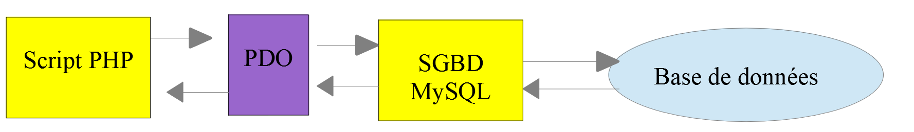

12. Utilisation du SGBD MySQL
Nous allons maintenant écrire des scripts PHP utilisant une base de données MySQL :

Dans l'architecture ci-dessus, le script PHP [1] ne dialogue pas directement avec le SGBD (Système de Gestion de Bases de Données) [3]. Il dialogue avec un intermédiaire appelé pilote de SGBD ou encore driver de SGBD [2]. PHP fournit une interface standard pour ces pilotes, l'interface [PDO] (PHP Data Objects). Cette interface est implémentée par différents pilotes adaptés à chaque SGBD : un pilote pour le SGBD MySQL, un autre pour le SGBD PostgreSQL… Pour changer de SGBD, on change de pilote :

Le pilote PDO isole le script PHP [1] du SGBD [3, 6]. Comme ces pilotes implémentent une interface standard, on peut s'attendre à ce que le script PHP [1] ne change pas si on passe du SGBD MySQL [3] au SGBD PostgreSQL [6]. Dans la réalité cet idéal n'existe pas. En effet, pour dialoguer avec le SGBD, le script PHP envoie des ordres SQL (Structured Query Language). C'est un langage implémenté par tous les SGBD mais qui est incomplet. Aussi les SGBD lui ont-ils ajouté des ordres propriétaires. C'est une première cause d'incompatibilité entre SGBD. Par ailleurs, les types de données utilisables dans les bases de données peuvent être différents d'un SGBD à l'autre. Ainsi PostgreSQL accepte un nombre de types de données bien plus grand que MySQL. C'est une seconde cause d'incompatibilité. Une autre cause est la gestion des clés primaires automatiques (générées par le SGBD) : quasiment chaque SGBD a sa propre politique. Etc… Les causes d'incompatibilité sont nombreuses.
Si on veut éviter de réécrire le script PHP [1] en passant de MySQL [3] à PostgreSQL [6], on est généralement amené à insérer une nouvelle couche entre le script PHP [1] et le pilote PDO [2, 5], couche dont le rôle sera de gommer les incompatibilités entre les deux SGBD. Cependant, dans les cas simples que nous allons rencontrer, cette couche supplémentaire ne sera pas nécessaire.
Nous allons maintenant utiliser le SGBD MySQL. Sa version 8.4 est incluse dans le paquetage [Laragon] que nous avons installé au début de ce cours.
Si le lecteur est novice avec la notion de base de données et de langage SQL, il pourra lire le document [http://sergetahe.com/cours-tutoriels-de-programmation/cours-tutoriel-sql-avec-le-sgbd-firebird/]. Ce document utilise le SGBD Firebird et non pas MySQL mais donne les fondamentaux des bases de données et du langage SQL. La documentation de MySQL 8.4 est par ailleurs disponible à l'adresse [https://dev.mysql.com/doc/refman/8.4/en/].
Les scripts de ce chapitre sont dans le dossier [scripts-console/mysql] :
12.1. Création d'une base de données
Nous montrons maintenant comment créer une base de données ainsi qu'un utilisateur MySQL avec l'outil [Laragon].
Une fois lancé, [Laragon] est administré à partir de sa fenêtre principale et de son menu (clic droit dans la fenêtre ou sur son icône dans la barre des tâches) :
- le bouton [Démarrer tout] lance le serveur web Apache et le SGBD MySQL. La fenêtre de [Laragon] indique alors pour chacun d'eux qu'il est actif, avec son port d'écoute : 80 pour Apache, 3306 pour MySQL ;
- le bouton [Base de données] lance l'outil [HeidiSQL], fourni avec [Laragon], qui permet d'administrer graphiquement les bases de données MySQL. On peut aussi installer l'outil web [phpMyAdmin] (menu Outils / Quick add) qui est alors accessible à l'URL [http://localhost/phpmyadmin] ;
- le bouton [Terminal] ouvre une fenêtre de commandes dans laquelle les outils de [Laragon] (php, composer, mysql…) sont directement utilisables .
Le cours PHP 7 créait la base de données et son utilisateur à la souris avec [phpMyAdmin]. Nous préférons ici écrire les ordres SQL correspondants dans un fichier texte, appelé script SQL. Un tel script se relit, se corrige, se conserve avec le code de l'application et se réexécute à volonté pour recréer la base à l'identique. Le script [dbpersonnes.sql] est le suivant :
Commentaires
- ligne 1 : en SQL, une ligne commençant par deux tirets est un commentaire ;
- ligne 6 : création de la base de données [dbpersonnes] si elle n'existe pas déjà. On va y construire une table de personnes. Le jeu de caractères [utf8mb4] permet d'enregistrer tous les caractères Unicode (lettres accentuées, mais aussi caractères asiatiques, émojis…). C'est le jeu de caractères par défaut de MySQL 8. Le nom [utf8], utilisé dans le cours PHP 7, désigne pour MySQL un ancien jeu de caractères incomplet (trois octets au plus par caractère), aujourd'hui déprécié ;
- ligne 9 : création de l'utilisateur [admpersonnes] avec le mot de passe [nobody]. Un utilisateur MySQL est identifié par son nom et par la machine depuis laquelle il se connecte, ici [localhost], la machine locale. Le mot de passe [nobody] est très faible (facile à deviner). En production, il faudrait choisir un mot de passe fort ;
- ligne 12 : l'utilisateur [admpersonnes] reçoit tous les droits sur toutes les tables ([dbpersonnes.*]) de la base [dbpersonnes], et aucun droit sur les autres bases .
Ce script doit être exécuté par l'administrateur du SGBD. Dans l'installation de [Laragon], c'est l'utilisateur [root], sans mot de passe. On ouvre le terminal de [Laragon] dans le dossier [scripts-console/mysql] et on exécute le script avec le client en ligne de commande [mysql] :
- l'option [-u root] donne le nom de l'utilisateur qui se connecte au SGBD. Comme [root] n'a pas de mot de passe, il n'est pas nécessaire d'en donner un (option [-p]) ;
- le symbole [<] redirige le contenu du fichier [dbpersonnes.sql] vers l'entrée du client [mysql], qui exécute les ordres SQL lus les uns après les autres. Lorsque tout se passe bien, rien n'est affiché .
On aurait pu aussi bien ouvrir le fichier [dbpersonnes.sql] dans [HeidiSQL] (menu Fichier / Charger un fichier SQL) ou dans l'onglet [SQL] de [phpMyAdmin] et l'exécuter de là. On vérifie les droits de l'utilisateur [admpersonnes] en se connectant sous son identité. L'option [-e] permet de passer directement un ordre SQL au client [mysql] ; l'ordre [show grants] affiche les droits de l'utilisateur connecté :
- ligne 2 : le client [mysql] signale qu'un mot de passe tapé dans la ligne de commande ([-pnobody], sans espace après [-p]) peut être vu par d'autres utilisateurs de la machine. Avec l'option [-p] seule, le mot de passe est demandé au clavier, sans être affiché ;
- ligne 7 : l'utilisateur [admpersonnes] a tous les droits sur la base [dbpersonnes] .
Désormais nous avons :
- une base de données MySQL [dbpersonnes] ;
- un utilisateur [admpersonnes/nobody] qui a tous les droits sur cette base de données .
Nous allons écrire des scripts PHP pour exploiter la base de données. PHP dispose de diverses bibliothèques pour gérer les bases de données. Nous utiliserons la bibliothèque [PDO] (PHP Data Objects) qui s'intercale entre le code PHP et le SGBD :

La bibliothèque [PDO] permet au script PHP de s'abstraire de la nature exacte du SGBD utilisé. Ainsi ci-dessus, le SGBD MySQL peut être remplacé par le SGBD PostgreSQL avec un impact minimum sur le code du script PHP. Chaque pilote PDO est une extension de PHP qui doit être activée. Le script [pdo-drivers.php] suivant affiche les pilotes disponibles :
- ligne 7 : la méthode statique [getAvailableDrivers] de la classe [PDO] rend la liste des pilotes PDO disponibles ;
- ligne 10 : la fonction [extension_loaded] indique si une extension de PHP est chargée. Les pilotes PDO de MySQL, PostgreSQL et SQLite sont les extensions [pdo_mysql], [pdo_pgsql] et [pdo_sqlite] .
Résultats :
Dans cette installation, les trois pilotes sont actifs. Seul le pilote [mysql] nous est nécessaire dans ce chapitre. Si un pilote manque, on l'active dans le menu de [Laragon] : PHP / Extensions, puis on clique sur l'extension voulue, par exemple [pdo_mysql]. Une autre façon d'activer une extension est de modifier directement le fichier [php.ini] qui configure PHP (menu PHP / php.ini de [Laragon]). Une extension y est activée par une ligne de la forme :
Elle est désactivée lorsque la ligne est mise en commentaire par un point-virgule ([;extension=pdo_pgsql]). Après avoir modifié le fichier [php.ini], il faut relancer les services de [Laragon] (bouton [Recharger]) pour que les modifications soient prises en compte par Apache. Les scripts console, eux, relisent le fichier [php.ini] à chaque exécution.
12.2. Connexion à une base de données MySQL
La connexion à un SGBD se fait par la construction d'un objet [PDO]. On peut utiliser le constructeur de la classe [PDO] ou, depuis PHP 8.4, sa méthode statique [connect]. Les deux admettent les mêmes paramètres :
La signification des paramètres est la suivante :
Paramètre | Signification |
[$dsn] | (Data Source Name) une chaîne précisant la nature du SGBD et sa localisation sur le réseau. La chaîne ["mysql:host=localhost"] indique qu'on a affaire à un SGBD MySQL opérant sur la machine locale. Cette chaîne peut comprendre d'autres paramètres, séparés par des points-virgules, notamment le port d'écoute du SGBD, le nom de la base à laquelle on veut se connecter et le jeu de caractères des échanges : ["mysql:host=localhost;port=3306;dbname=dbpersonnes;charset=utf8mb4"] |
[$username] | l'identifiant de l'utilisateur qui se connecte |
[$password] | son mot de passe |
[$options] | un tableau d'options pour le pilote du SGBD |
Seul le premier paramètre est obligatoire. L'objet ainsi construit sera ensuite le support de toutes les opérations faites sur la base de données à laquelle on s'est connecté. Si l'objet n'a pu être construit, une exception de type [PDOException] est lancée.
Voici un exemple de connexion [mysql-01.php] :
Commentaires
- lignes 8-10 : les paramètres de la connexion ;
- ligne 14 : la connexion au SGBD. La méthode [connect] est ici utilisée avec les paramètres suivants :
- une chaîne précisant la nature du SGBD et sa localisation. La chaîne ["mysql:host=localhost"] indique qu'on a affaire à un SGBD MySQL opérant sur la machine locale. Le port n'a pas été précisé : le port 3306 est alors utilisé par défaut. Le nom de la base de données n'est pas indiqué non plus. Il y aura alors connexion au SGBD MySQL, la sélection d'une base précise pouvant se faire plus tard ;
- un identifiant d'utilisateur ;
- son mot de passe ;
- ligne 17 : [$connexion::class] est le nom de la classe de l'objet [$connexion]. Depuis PHP 8.4, chaque pilote PDO a sa propre classe, dérivée de la classe [PDO] : [Pdo\Mysql] pour MySQL, [Pdo\Pgsql] pour PostgreSQL, [Pdo\Sqlite] pour SQLite. La méthode [PDO::connect] crée l'objet de la classe correspondant au DSN. Avec [new PDO(...)], on obtiendrait un objet de la classe [PDO] elle-même, qui fonctionne de la même façon mais ne donne pas accès aux méthodes propres au pilote. Comme nous n'utiliserons que les méthodes communes à tous les pilotes, les deux écritures conviennent ;
- ligne 19 : la fermeture de la connexion se fait en supprimant la dernière référence à l'objet PDO créé initialement. C'est d'ailleurs ce qui se passe automatiquement à la fin du script ;
- ligne 20 : la connexion à un SGBD peut échouer. Dans ce cas, une exception de type [PDOException] est lancée. Celle-ci dérive de l'exception PHP [RuntimeException] ;
- ligne 21 : on affiche le message d'erreur de l'exception ;
- ligne 22 : on termine le script avec un code de sortie non nul, ce qui signale l'échec à un éventuel programme appelant .
Résultats :
Réexécutons le script en mettant à la constante [PWD] un mot de passe erroné. Le résultat est alors le suivant :
Le message contient trois informations : le code SQLSTATE [HY000], code d'erreur normalisé commun à tous les SGBD (HY000 = erreur générale), le code d'erreur propre à MySQL [1045] et le message de MySQL.
12.3. Création d'une table
Le script [mysql-02.php] montre la création d'une table dans une base de données :
Commentaires
- ligne 7 : le DSN désigne cette fois la base [dbpersonnes] ([dbname=dbpersonnes]). Le paramètre [charset=utf8mb4] indique au SGBD que les chaînes de caractères échangées avec lui sont codées en UTF-8, le codage de nos scripts PHP. Ainsi les caractères accentués seront correctement enregistrés dans la base et correctement relus ;
- ligne 14 : connexion à la base de données. C'est toujours la première chose à faire. Le résultat de la connexion est un objet [PDO] au travers duquel vont se faire les opérations sur la base de données ;
- ligne 16 : l'ordre SQL [drop table] supprime la table [personnes] de la base de données [dbpersonnes]. La clause [if exists] évite une erreur si la table [personnes] n'existe pas ;
- ligne 17 : exécution de l'ordre SQL précédent sur la base de données [dbpersonnes] par la méthode [PDO::exec]. Cette exécution peut lancer une [PDOException] qui sera interceptée par la clause [catch] ;
- lignes 19-20 : cet ordre SQL crée une table [personnes]. Une table contient des lignes et des colonnes. Les colonnes forment ce qu'on appelle la structure de la table. Les lignes forment le contenu de la table. Une base de données peut contenir une ou plusieurs tables. La table [personnes] aura ici trois colonnes :
- prenom : le prénom d'une personne sous la forme d'une chaîne d'au plus 30 caractères ;
- nom : le nom de cette même personne sous la forme d'une chaîne d'au plus 30 caractères ;
- age : l'âge de la personne sous la forme d'un entier ;
- l'attribut [not null] sur une colonne impose que la colonne ait une valeur. Ne pas lui en donner provoque une [PDOException] ;
- [primary key(nom, prenom)] fixe une clé primaire à la table [personnes]. Une clé primaire a une valeur unique pour chaque ligne de la table. Ici la clé primaire sera obtenue par concaténation des colonnes [nom] et [prenom] de la ligne. Cette contrainte fait que dans la table on ne pourra pas avoir deux personnes ayant les mêmes nom et prénom, donc deux homonymes. Créer un homonyme d'une personne dans la table provoque une [PDOException] ;
- lignes 23-25 : s'il se produit une [PDOException], on affiche le message d'erreur associé ;
- lignes 26-28 : on passe dans la clause [finally] dans tous les cas, exception ou pas, pour fermer la connexion à la base de données .
En cas d'erreur, une opération SQL faite avec un objet [PDO] peut soit rendre une valeur particulière (souvent le booléen [false]) sans rien signaler, soit lancer une exception. Ce comportement est réglé par l'attribut [PDO::ATTR_ERRMODE] de la connexion. En PHP 7, le mode par défaut était le premier : les erreurs étaient silencieuses et le cours PHP 7 demandait le second mode par l'instruction :
Depuis PHP 8.0, le mode exception est le mode par défaut : toute erreur du SGBD lance une [PDOException]. Cette instruction n'est donc plus nécessaire et nous ne l'écrirons plus. C'est aussi pourquoi nous avons écrit [drop table if exists] : dans le cours PHP 7, l'ordre [drop table personnes] sur une table inexistante échouait silencieusement ; en PHP 8, il lancerait une exception.
Résultats :
Si l'exécution du script se passe sans erreur, on peut vérifier la présence de la table et sa structure avec [HeidiSQL], [phpMyAdmin] ou plus simplement avec le client [mysql]. L'ordre SQL [describe] affiche la structure d'une table :
- lignes 6-8 : les trois colonnes de la table, avec leur type (colonne Type) ;
- colonne Null : aucune des trois colonnes ne peut être vide ;
- colonne Key : les colonnes [prenom] et [nom] font partie de la clé primaire (PRI) .
L'ordre SQL [show index] affiche les index de la table. Un index permet de retrouver dans la table les lignes ayant telle valeur d'index plus vite que si on parcourait séquentiellement les lignes de la table. La clé primaire fait toujours partie des index mais un index peut ne pas être une clé primaire :
- l'index est ici la clé primaire (colonne Key_name = PRIMARY) ;
- il est constitué des colonnes [nom, prenom] de chaque ligne, dans cet ordre (colonnes Seq_in_index et Column_name) .
Maintenant, voyons ce qui se passe si on crée des erreurs, respectivement sur le nom de la base, le nom de l'utilisateur, son mot de passe.
Si on met un nom de base inexistante ([dbname=dbpersonnes2]) :
Si on met un nom d'utilisateur inexistant :
Si on met un mot de passe erroné :
On remarquera que MySQL ne dit pas si c'est le nom de l'utilisateur ou son mot de passe qui est erroné : c'est une mesure de sécurité, qui ne donne aucune indication à quelqu'un qui chercherait à deviner les identifiants. De même, l'utilisateur [admpersonnes] n'apprend pas si la base [dbpersonnes2] existe ou non : il sait seulement qu'il n'y a pas accès.
12.4. Remplissage d'une table
Nous allons écrire un script PHP qui exécute des ordres SQL trouvés dans le fichier texte [creation.txt] suivant :
Commentaires
- le langage SQL (Structured Query Language) n'est pas sensible à la casse (majuscules, minuscules) des ordres SQL ;
- ligne 1 : on supprime la table [personnes] si elle existe ;
- ligne 2 : création de la table [personnes] avec les trois colonnes (prenom, nom, age) et la clé primaire (nom, prenom) ;
- lignes 3-9 : insertion de 7 lignes dans la table [personnes] ;
- ligne 5 : cet ordre d'insertion devrait échouer car il tente la même insertion que la ligne précédente. La contrainte de clé primaire devrait empêcher cette insertion : on ne peut avoir deux personnes ayant mêmes nom et prénom ;
- ligne 9 : cet ordre d'insertion devrait échouer lui aussi pour la même raison ;
- ligne 7 : le prénom [Géraldine] comporte un caractère accentué. Le fichier [creation.txt], comme tous les fichiers du cours, est codé en UTF-8 : c'est le codage par défaut de [VS Code], affiché dans sa barre d'état. Le cours PHP 7 ajoutait au fichier l'ordre propre à MySQL [SET NAMES 'utf8'] pour indiquer au SGBD le codage des caractères reçus. Ce n'est plus nécessaire : le codage est fixé une fois pour toutes par le paramètre [charset=utf8mb4] du DSN .
Le script PHP chargé d'exécuter les ordres SQL de ce fichier texte est le suivant [mysql-03.php] :
Commentaires
- la fonction [exécuterCommandes] (lignes 35-80) est chargée d'exécuter les commandes SQL qu'elle trouve dans le fichier texte [$sqlFileName] (paramètre 2). Pour les exécuter, elle utilise la connexion ouverte [$connexion] (paramètre 1) avec le serveur MySQL. Le troisième paramètre [$suivi] est un booléen qui contrôle les affichages écran : à [true], l'ordre SQL exécuté est affiché à l'écran avec sa réussite ou son échec, sinon l'exécution de l'ordre SQL est silencieuse. Le quatrième paramètre [$arrêt] contrôle ce qu'il faut faire lorsqu'une commande SQL échoue : à [true], il indique que l'exécution des commandes SQL doit s'arrêter, sinon celle-ci continue. La fonction [exécuterCommandes] rend un tableau de messages d'erreurs, vide s'il n'y a pas eu d'erreurs. On remarquera que PHP accepte les caractères accentués dans les noms de fonctions et de variables ;
- ligne 12 : le chemin du fichier [creation.txt] est construit à partir de la constante [__DIR__], le dossier du script. Ainsi le script trouve son fichier quel que soit le dossier d'où il est lancé ;
- lignes 15-20 : on ouvre la connexion vers la base MySQL [dbpersonnes]. Si l'ouverture échoue, un message d'erreur est affiché et on s'arrête ;
- ligne 23 : la fonction [exécuterCommandes] est appelée pour exécuter le fichier d'ordres SQL. On lui passe une connexion ouverte. Les deux derniers arguments sont passés par leur nom ([suivi: true, arrêt: false]) : ce sont des arguments nommés (PHP 8.0). L'appel [exécuterCommandes($connexion, SQL_COMMANDS_FILENAME, true, false)] serait équivalent mais moins lisible : on ne sait pas, sans aller voir la signature de la fonction, ce que signifient [true] et [false] ;
- ligne 25 : on ferme la connexion ;
- lignes 27-30 : on affiche les erreurs rendues par la fonction [exécuterCommandes] ;
- lignes 45-47 : on met les ordres SQL dans un tableau [$requêtes] avec la fonction [file]. L'option [FILE_IGNORE_NEW_LINES] enlève la marque de fin de ligne de chaque ligne lue, l'option [FILE_SKIP_EMPTY_LINES] ignore les lignes vides. Les deux options sont combinées par l'opérateur [|] (ou binaire). Si le fichier n'est pas lisible, on n'appelle pas [file], qui émettrait un avertissement, et [$requêtes] vaut [false] ;
- lignes 49-51 : si le fichier des ordres SQL n'a pu être lu, on rend un tableau d'erreurs avec un unique message ;
- ligne 53 : on va cumuler les erreurs dans le tableau [$erreurs] ;
- ligne 54 : on boucle sur toutes les requêtes ;
- ligne 56 : la fonction [trim] enlève les espaces qui précèdent et suivent le texte de l'ordre SQL. Par « espaces », il faut entendre l'espace, la tabulation \t, le retour chariot \r, la marque de fin de ligne \n… Une ligne ne contenant que des espaces devient ainsi vide : elle est ignorée (ligne 60) ;
- ligne 64 : on envoie l'ordre SQL au serveur MySQL. La méthode [PDO::exec] lance une exception si l'exécution échoue. Si l'exécution réussit, l'ordre SQL est affiché à l'écran si le paramètre [$suivi] vaut [true] ;
- ligne 71 : en cas d'erreur, le message d'erreur est ajouté au tableau des erreurs ;
- lignes 73-75 : si le paramètre [$arrêt] vaut [true], on sort de la boucle avec l'instruction [break] ;
- ligne 79 : une fois tous les ordres SQL exécutés, on rend le tableau des erreurs [$erreurs] .
La fonction [addError] (lignes 82-91) ajoute une erreur au tableau des erreurs [$erreurs]. Elle reçoit 4 paramètres :
- le paramètre [$erreurs] est passé par référence ([&$erreurs]). En effet, on veut agir sur le tableau qui est passé en paramètre et non sur une copie de celui-ci ;
- le paramètre [$requête] est le texte SQL de l'ordre qui a échoué ;
- le paramètre [$msg] est le message d'erreur lié à l'ordre qui a échoué ;
- le booléen [$suivi] indique si le message d'erreur doit être affiché ([true]) ou non ([false]) sur la console .
On notera que les fonctions [exécuterCommandes] et [addError] sont définies après le code qui les utilise. C'est possible car PHP prend connaissance de toutes les fonctions définies au niveau principal d'un script avant de commencer à l'exécuter.
Les résultats écran :
- lignes 6 et 10 : les deux insertions d'homonymes ont échoué : la clé primaire 'Lefur-Sylvie' (resp. 'Girond-Paulette') existe déjà (Duplicate entry). Le code SQLSTATE [23000] désigne une violation de contrainte d'intégrité, le code [1062] est le code MySQL de l'erreur ;
- lignes 12-16 : le récapitulatif des erreurs .
Les insertions faites sont visibles avec le client [mysql] :
On remarquera que les lignes sont rendues dans l'ordre de la clé primaire (nom, prenom), qui n'est pas l'ordre des insertions. En SQL, l'ordre des lignes rendues par un [select] n'est garanti que si on le demande avec une clause [order by].
12.5. Exécution d'ordres SQL quelconques
Le script suivant montre l'exécution des ordres SQL du fichier texte [sql.txt] suivant :
Parmi ces ordres SQL, il y a l'ordre [select] qui ramène des résultats de la base de données, les ordres [insert], [update], [delete] qui modifient la base sans ramener de résultats et enfin des ordres erronés tels que le dernier ([xselect]). Le script [mysql-04.php] reprend le script [mysql-03.php] en changeant le nom du fichier des ordres SQL ([__DIR__ . "/sql.txt"]). Seule la fonction [exécuterCommandes] est modifiée et une fonction [afficherInfos] est ajoutée :
Commentaires
- lignes 35-87 : la fonction [exécuterCommandes] est légèrement modifiée : l'ordre SQL [select] ne s'exécute pas de la même façon que les autres ordres SQL. Cet ordre est le seul à ramener comme résultat une table, c'est-à-dire un ensemble de lignes et de colonnes de la base de données ;
- ligne 63 : on isole le premier mot de l'ordre SQL. La fonction [explode] découpe la requête sur les espaces en au plus 2 morceaux (3e paramètre) ; le premier morceau ([[0]]) est le nom de la commande, mis en minuscules par la fonction [strtolower]. Le cours PHP 7 utilisait une expression régulière ;
- lignes 67-69 : si la commande SQL est [select], on utilise la méthode [PDO::query], sinon la méthode [PDO::exec] pour exécuter l'ordre SQL. Dans les deux cas, si l'exécution échoue, une exception est lancée et interceptée par la clause [catch]. Si l'exécution réussit, son résultat est affiché par la fonction [afficherInfos] (ligne 75) :
- la méthode [query] rend un objet de type [PDOStatement] qui donne accès aux lignes rendues par le [select]. Son second paramètre [PDO::FETCH_NUM] indique que chaque ligne doit être rendue sous la forme d'un tableau indexé par les numéros des colonnes 0, 1, 2… ;
- la méthode [exec] rend un entier : le nombre de lignes modifiées par l'ordre SQL ;
- lignes 101-124 : la fonction [afficherInfos] affiche des informations sur le résultat de l'exécution d'un ordre SQL. Le paramètre [$résultat] a pour type [PDOStatement|int] : c'est un type union (PHP 8.0), qui accepte soit un objet [PDOStatement], soit un entier ;
- ligne 104 : on traite le cas du [select]. L'opérateur [instanceof] teste le type de l'objet [$résultat] ;
- ligne 107 : la méthode [PDOStatement::columnCount] rend le nombre de colonnes de la table résultat du [select] ;
- ligne 108 : la méthode [PDOStatement::getColumnMeta] rend un tableau d'informations sur la colonne n° [$i] de la table résultat du [select]. Dans ce tableau, la valeur associée à la clé 'name' est le nom de la colonne. Les noms des colonnes sont cumulés dans le tableau [$colonnes] ;
- ligne 110 : la fonction [implode] concatène les noms des colonnes en les séparant par une virgule ;
- ligne 113 : on construit avec la fonction [str_repeat] une ligne de séparation ayant la même longueur que le titre. La fonction [mb_strlen] compte les caractères d'une chaîne UTF-8 ; la fonction [strlen] compte les octets, et un caractère accentué en occupe deux ;
- lignes 115-117 : un objet de type [PDOStatement] peut être parcouru par une boucle [foreach]. À chaque itération, l'élément obtenu est une ligne de la table résultat du [select] sous la forme d'un tableau des valeurs des différentes colonnes de la ligne. On affiche ces valeurs séparées par des virgules ;
- lignes 121-123 : le résultat de l'exécution d'un ordre [insert], [update], [delete] est le nombre de lignes modifiées par l'ordre. Le cours PHP 7 utilisait ici une instruction [switch] dont l'une des clauses était écrite par erreur [case "delete";] avec un point-virgule au lieu de deux-points. PHP le tolérait ; depuis PHP 8.5, cette syntaxe est dépréciée .
Les résultats écran :
- lignes 33-35 : le dernier [select] ne ramène aucune ligne : la personne [Bruneau] a été supprimée par l'ordre [delete] précédent ;
- ligne 36 : l'ordre [xselect] n'existe pas. Le code SQLSTATE [42000] désigne une erreur de syntaxe ou une violation d'accès, le code MySQL [1064] une erreur de syntaxe .
12.6. Utilisation d'ordres SQL préparés
12.6.1. Exemple 1
Examinons le script suivant [mysql-05.php] :
Commentaires
Nous nous intéressons ici aux lignes qui insèrent des personnes dans la table des personnes de la base [dbpersonnes].
- ligne 16 : l'ordre SQL [delete] sans clause [where] supprime toutes les lignes de la table ;
- ligne 23 : on « prépare » un ordre SQL paramétré. Les paramètres sont précédés du caractère deux-points : [:nom], [:prenom], [:age]. Pour « préparer » un ordre SQL, on utilise la méthode [PDO::prepare]. Le résultat est un objet de type [PDOStatement]. La « préparation » n'est pas une exécution : rien n'est modifié dans la base ;
- ligne 26 : exécution de l'ordre préparé avec la méthode [PDOStatement::execute]. Pour ce faire, il faut donner des valeurs aux paramètres [:nom], [:prenom] et [:age]. Il y a plusieurs façons de faire cela. On utilise ici un tableau associatif ayant pour clés les noms des paramètres de l'ordre préparé, que l'on passe à la méthode [PDOStatement::execute] ;
- ligne 27 : la méthode [PDOStatement::rowCount] rend le nombre de lignes modifiées par la dernière exécution de l'ordre préparé. Dans la chaîne entre guillemets, l'appel de méthode est entouré d'accolades [{...}] pour que PHP l'évalue. Il en est de même pour l'élément de tableau [{$personne["prenom"]}] ;
- lignes 30-33 : une autre façon de faire est de donner aux paramètres une valeur avec la méthode [PDOStatement::bindValue] avant d'appeler [execute] sans argument. Le 3e paramètre facultatif de [bindValue] précise le type SQL de la valeur ([PDO::PARAM_INT] pour un entier, [PDO::PARAM_STR], valeur par défaut, pour une chaîne). L'inconvénient est qu'il faut une instruction par paramètre. La méthode du tableau associatif est souvent plus pratique .
La méthode utilisée ici pour faire les insertions :
- un ordre préparé ;
- n exécutions de l'ordre préparé ;
est plus économique en temps d'exécution que d'exécuter n ordres SQL différents. Elle a surtout un autre avantage, décisif : les valeurs des paramètres sont transmises au SGBD séparément du texte de l'ordre SQL. Elles ne peuvent donc pas en modifier le sens. Si on construisait l'ordre SQL par concaténation, par exemple ["insert into personnes values ('$prenom', '$nom', $age)"], un prénom contenant une apostrophe (« Jean-Michel d'Ormesson ») provoquerait une erreur de syntaxe, et un utilisateur malveillant pourrait glisser dans une valeur saisie des ordres SQL de son choix : c'est l'attaque dite par injection SQL. Les ordres préparés sont donc à privilégier dès qu'un ordre SQL contient des valeurs venant de l'extérieur du script. Ils sont utilisables pour les ordres SQL [select], [update], [delete], [insert]. Dans le cas de l'ordre SQL [select], après son exécution avec [PDOStatement::execute], on récupère les lignes du résultat avec les méthodes [PDOStatement::fetch] ou [PDOStatement::fetchAll].
Résultats :
12.6.2. Exemple 2
Le script suivant [mysql-06.php] montre l'utilisation d'un ordre préparé pour l'opération SQL [select], ainsi que diverses façons de récupérer les lignes ramenées par cette opération :
Commentaires
- lignes 13-23 : une classe [Person] dont les attributs privés typés portent les noms des colonnes de la table [personnes] ;
- lignes 26-34 : une classe immuable [Personne] dont le constructeur a des paramètres portant les noms des colonnes de la table [personnes] ;
- ligne 38 : le 4e paramètre de [PDO::connect] est un tableau d'options de la connexion. L'option [PDO::ATTR_DEFAULT_FETCH_MODE] fixe la façon dont seront rendues par défaut les lignes lues : ici [PDO::FETCH_ASSOC], des tableaux associatifs indexés par les noms des colonnes. Sans cette option, le mode par défaut est [PDO::FETCH_BOTH] (voir plus loin) ;
- lignes 43-45 : on insère 10 lignes dans la table [personnes] avec un ordre préparé. Le tableau des valeurs est construit directement dans l'appel à [execute] ;
- lignes 47-48 : on « prépare » un ordre SQL [select] qu'on exécute ensuite ;
- ligne 50 : on récupère avec la méthode [PDOStatement::fetch] la ligne suivante du résultat de l'opération SQL [select] exécutée, ici la première. La méthode [fetch] peut rendre les lignes de diverses façons. Le script en présente quelques-unes. Sans paramètre, elle utilise le mode par défaut de la connexion, ici un tableau associatif. On remarquera que l'âge est rendu sous la forme d'un entier ([int(0)]). C'est une nouveauté de PHP 8.1 : auparavant, le pilote MySQL rendait toutes les valeurs sous forme de chaînes de caractères ([string(1) "0"] dans le cours PHP 7). Le résultat affiché par [var_dump] est le suivant :
- ligne 53 : le paramètre [PDO::FETCH_BOTH] fait que la ligne ramenée est un tableau indexé à la fois par les noms et par les numéros des colonnes :
- ligne 56 : le paramètre [PDO::FETCH_OBJ] fait que la ligne ramenée est un objet de type [stdClass] dont les attributs sont les noms des colonnes de la table :
- ligne 59 : on fixe le mode de lecture de la méthode [fetch] avec la méthode [PDOStatement::setFetchMode]. Ce mode devient alors le mode par défaut de l'ordre [$statement] tant qu'il n'est pas changé, soit par une autre opération [setFetchMode], soit en passant un mode en paramètre à la méthode [fetch] comme il a été fait précédemment. L'opération [setFetchMode(PDO::FETCH_CLASS, Person::class)] indique que la ligne lue doit être placée dans un objet de type [Person]. [Person::class] est la chaîne "Person", nom complet de la classe. PDO crée l'objet puis donne à ses attributs les valeurs des colonnes de même nom, même si ces attributs sont privés. La ligne suivante affiche le résultat :
- lignes 63-65 : montre comment exploiter séquentiellement les lignes restantes du [select]. La méthode [fetch] rend [false] lorsqu'il n'y a plus de lignes, ce qui arrête la boucle. L'affichage de [$personne] utilise la méthode [__toString] de la classe [Person] :
- lignes 67-68 : un [select] paramétré : on ne veut que les personnes d'au moins 70 ans ;
- ligne 69 : la méthode [PDOStatement::fetchAll] rend en une fois toutes les lignes du résultat, ici sous forme de tableaux associatifs (mode par défaut de la connexion). La fonction [array_map] transforme chacune d'elles en objet [Personne]. L'écriture [new Personne(...$ligne)] utilise l'opérateur de décomposition [...] sur un tableau associatif : chaque clé devient un argument nommé (PHP 8.1). Ainsi la ligne [["nom" => "nom7", "prenom" => "prenom7", "age" => 70]] donne l'appel [new Personne(nom: "nom7", prenom: "prenom7", age: 70)]. Cette technique convient à une classe immuable dont les attributs sont initialisés par le constructeur, alors que le mode [PDO::FETCH_CLASS], qui donne directement leurs valeurs aux attributs, échoue avec une classe comme [Personne] dont le constructeur exige des arguments. Elle a aussi l'avantage de faire vérifier par PHP le type de chaque valeur. Le résultat affiché est le suivant :
Le tableau suivant résume les modes de lecture rencontrés :
Mode | Une ligne est rendue sous la forme |
[PDO::FETCH_ASSOC] | d'un tableau associatif [colonne => valeur] |
[PDO::FETCH_NUM] | d'un tableau indexé par les numéros des colonnes 0, 1, 2… |
[PDO::FETCH_BOTH] | d'un tableau indexé à la fois par les noms et les numéros des colonnes (mode par défaut de PDO) |
[PDO::FETCH_OBJ] | d'un objet [stdClass] dont les attributs sont les noms des colonnes |
[PDO::FETCH_CLASS] | d'un objet de la classe indiquée dont les attributs portent les noms des colonnes |
Chaque pilote a aussi ses propres options, regroupées depuis PHP 8.4 dans sa classe. Par exemple, l'option qui exécute un ordre SQL à chaque connexion à MySQL s'écrit [Pdo\Mysql::ATTR_INIT_COMMAND]. Les anciennes constantes [PDO::MYSQL_ATTR_INIT_COMMAND], que l'on trouve dans beaucoup de documents, sont dépréciées depuis PHP 8.5.
12.7. Utilisation de transactions
Une transaction permet de regrouper une séquence d'ordres SQL en une unité d'exécution : soit tous les ordres réussissent, soit l'un d'eux échoue et alors tous les ordres SQL qui ont précédé celui-ci sont annulés. Dit autrement, lorsqu'on utilise une transaction pour exécuter des ordres SQL, après l'exécution de celle-ci la base de données est dans un état stable :
- soit dans un état nouveau créé par l'exécution réussie de tous les ordres SQL de la transaction ;
- soit dans l'état dans lequel elle était avant que la transaction ne commence à être exécutée .
Nous allons reprendre l'exemple de l'exécution des ordres SQL contenus dans un fichier texte étudié au paragraphe « Exécution d'ordres SQL quelconques ». Nous allons inclure cette exécution dans une transaction. Les ordres SQL seront contenus dans le fichier [sql2.txt] suivant :
L'ordre erroné de la ligne 11 va faire échouer toute la transaction. On devrait donc retrouver la base comme elle était avant la transaction. Dans l'exemple ci-dessus, on ne devrait donc pas voir dans la table la ligne insérée par la ligne 9. Le script évolue très peu par rapport au script [mysql-04.php]. Le nom du fichier des ordres SQL devient [__DIR__ . "/sql2.txt"] et la fonction [exécuterCommandes] perd son quatrième paramètre :
En effet, comme les ordres SQL s'exécutent au sein d'une transaction, toute erreur provoquera l'arrêt de la transaction. La fonction [exécuterCommandes] devient la suivante :
Commentaires
- lignes 41-42 : rappel du rôle d'une transaction ;
- ligne 54 : on démarre une transaction avec la méthode [PDO::beginTransaction]. À partir de maintenant, tout ordre SQL exécuté dans la boucle [foreach] l'est au sein de cette transaction ;
- lignes 82-83 : à la première erreur, on sort de la boucle : il est inutile d'exécuter les ordres suivants puisque la transaction va être annulée ;
- lignes 87-95 : le tableau [$erreurs] est vide s'il n'y a pas eu d'erreur. On valide alors la transaction avec la méthode [PDO::commit] : les modifications faites par les ordres SQL deviennent définitives. Sinon, on annule la transaction avec la méthode [PDO::rollBack] : les modifications faites par les ordres SQL de la transaction sont défaites. On ajoute alors l'erreur de transaction dans la liste des erreurs .
Avant l'exécution du script [mysql-07.php], la table [personnes] contient les dix lignes insérées par le script [mysql-06.php] :
On exécute le script [mysql-07.php]. Les affichages écran sont alors les suivants :
- lignes 47-52 : la ligne [Josette, Bruneau, 46] a bien été insérée dans la table, au sein de la transaction ;
- ligne 53 : une erreur se produit sur la commande [xselect] ;
- ligne 54 : la transaction est alors annulée .
Si on vérifie l'état de la base, on la trouve dans le même état qu'avant l'exécution du script. On n'y voit pas notamment la ligne [Josette, Bruneau, 46] de la ligne 52 des résultats ci-dessus :
Résumé :
- une transaction commence avec la méthode [PDO::beginTransaction] ;
- on la termine sur un succès avec la méthode [PDO::commit] ;
- on la termine sur un échec avec la méthode [PDO::rollBack] ;
- la méthode [PDO::inTransaction] indique si une transaction est en cours .
Lorsqu'on exploite une base de données, c'est une bonne habitude de mettre toute opération SQL dans une transaction pour s'isoler des autres utilisateurs de la base (elle a également ce rôle). Une transaction doit être la plus courte possible. Il ne faut donc pas oublier de la terminer par un [commit] ou un [rollBack] selon les cas. Attention enfin : avec MySQL, les ordres qui modifient la structure de la base ([create table], [drop table]…) ne peuvent pas être annulés. Ils valident implicitement la transaction en cours. C'est pourquoi le fichier [sql2.txt] ne contient que des ordres [select], [insert], [update] et [delete].